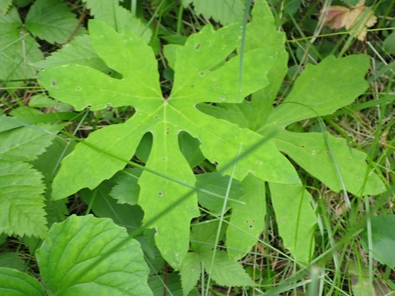
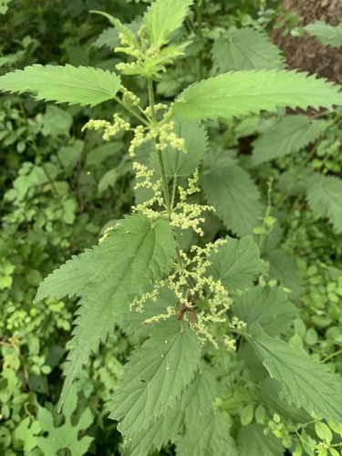
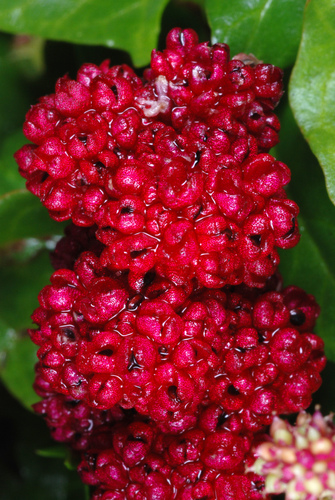
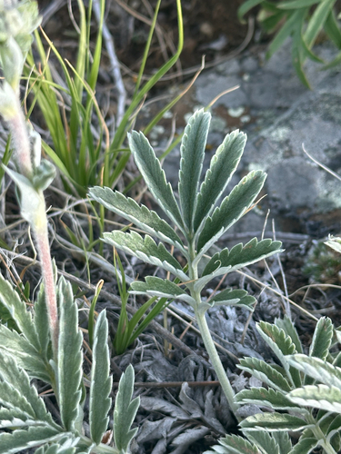
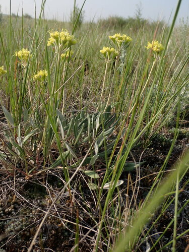

Soil builder
What the plant does, from the tags the catalogue records against it.
46 plants
Alpine Hedysarum (Bear Root)Hedysarum americanum Leslie Seaton, some rights reserved (CC BY)") BalsamrootBalsamorhiza sagittataBig BluestemAndropogon gerardi
BalsamrootBalsamorhiza sagittataBig BluestemAndropogon gerardi Matt Lavin, some rights reserved (CC BY)") Big SagebrushArtemisia tridentata
Big SagebrushArtemisia tridentata Boreal YarrowAchillea borealis
Boreal YarrowAchillea borealis Douglas Goldman, some rights reserved (CC BY-SA), uploaded by Douglas Goldman") Canada GoldenrodSolidago canadensis
Canada GoldenrodSolidago canadensis Sean Vanderluit, some rights reserved (CC BY), uploaded by Sean Vanderluit") Common HorsetailEquisetum arvense
Common HorsetailEquisetum arvense Caleb Catto, some rights reserved (CC BY), uploaded by Caleb Catto") Douglas MapleAcer glabrum
Douglas MapleAcer glabrum Dustin Snider, some rights reserved (CC BY), uploaded by Dustin Snider") Dwarf BirchBetula glandulosaElegant GoldenrodSolidago lepida
Dwarf BirchBetula glandulosaElegant GoldenrodSolidago lepida Tom Pollard, some rights reserved (CC BY), uploaded by Tom Pollard") Evening PrimroseOenothera biennis
Evening PrimroseOenothera biennis Douglas Goldman, some rights reserved (CC BY-SA), uploaded by Douglas Goldman") FireweedChamaenerion angustifolium
FireweedChamaenerion angustifolium Douglas Goldman, some rights reserved (CC BY-SA), uploaded by Douglas Goldman") Flat-topped GoldenrodEuthamia graminifoliaGreen AlderAlnus alnobetulaGumweedGrindelia squarrosa
Flat-topped GoldenrodEuthamia graminifoliaGreen AlderAlnus alnobetulaGumweedGrindelia squarrosa Andreas Stiller, some rights reserved (CC BY), uploaded by Andreas Stiller") Late GoldenrodSolidago gigantea
Late GoldenrodSolidago gigantea Noah How, some rights reserved (CC BY), uploaded by Noah How") Mountain Sweet CicelyOsmorhiza berteroi
Mountain Sweet CicelyOsmorhiza berteroi Stan Shebs, some rights reserved (CC BY-SA)") Narrow-leaf WillowSalix exiguaNarrow-leaved HawkweedHieracium umbellatum
Narrow-leaf WillowSalix exiguaNarrow-leaved HawkweedHieracium umbellatum Matt Lavin, some rights reserved (CC BY-SA)") Plains WormwoodArtemisia campestrisPrairie Cord GrassSpartina pectinataPrairie GoldenrodSolidago missouriensisPrairie ThistleCirsium flodmaniiPurple ConeflowerEchinacea angustifoliaRocky Mountain BeeplantPeritoma serrulata
Plains WormwoodArtemisia campestrisPrairie Cord GrassSpartina pectinataPrairie GoldenrodSolidago missouriensisPrairie ThistleCirsium flodmaniiPurple ConeflowerEchinacea angustifoliaRocky Mountain BeeplantPeritoma serrulata Harvey Barrison, some rights reserved (CC BY-SA)") Sandbar WillowSalix interior
Sandbar WillowSalix interior Matt Lavin, some rights reserved (CC BY-SA)") Silver SagebrushArtemisia cana
Silver SagebrushArtemisia cana pfly, some rights reserved (CC BY-SA)") Sitka ValerianValeriana sitchensisSlender NettleUrtica gracilis
Sitka ValerianValeriana sitchensisSlender NettleUrtica gracilis Douglas Goldman, some rights reserved (CC BY-SA), uploaded by Douglas Goldman") Smooth Sweet CicelyOsmorhiza longistylisSticky GoldenrodSolidago glutinosa
Smooth Sweet CicelyOsmorhiza longistylisSticky GoldenrodSolidago glutinosa Tatiana Strus, some rights reserved (CC BY), uploaded by Tatiana Strus") Swamp HorsetailEquisetum fluviatile
Swamp HorsetailEquisetum fluviatile Sweet-scented BedstrawGalium triflorum
Sweet-scented BedstrawGalium triflorum Sandy Wolkenberg, some rights reserved (CC BY), uploaded by Sandy Wolkenberg") Tall GoldenrodSolidago altissima
Tall GoldenrodSolidago altissima Eric Lamb, some rights reserved (CC BY), uploaded by Eric Lamb") Tall Showy YarrowAchillea alpina
Tall Showy YarrowAchillea alpina Юлия, some rights reserved (CC BY), uploaded by Юлия") Variegated HorsetailEquisetum variegatum
Variegated HorsetailEquisetum variegatum Martin Purdy, some rights reserved (CC BY), uploaded by Martin Purdy") Western Meadow AsterSymphyotrichum campestreWild Black CurrantRibes americanum
Western Meadow AsterSymphyotrichum campestreWild Black CurrantRibes americanum Michael J. Papay, some rights reserved (CC BY), uploaded by Michael J. Papay") Willow AsterSymphyotrichum lanceolatum
Willow AsterSymphyotrichum lanceolatum Matt Lavin, some rights reserved (CC BY-SA)") Yellow PucoonLithospermum ruderale
Yellow PucoonLithospermum ruderale
BalsamrootBalsamorhiza sagittataBig BluestemAndropogon gerardiBig SagebrushArtemisia tridentataBoreal YarrowAchillea borealisCanada GoldenrodSolidago canadensisCommon HorsetailEquisetum arvenseDouglas MapleAcer glabrumDwarf BirchBetula glandulosaElegant GoldenrodSolidago lepidaEvening PrimroseOenothera biennisFireweedChamaenerion angustifoliumFlat-topped GoldenrodEuthamia graminifoliaGreen AlderAlnus alnobetulaGumweedGrindelia squarrosaLate GoldenrodSolidago giganteaMountain Sweet CicelyOsmorhiza berteroiNarrow-leaf WillowSalix exiguaNarrow-leaved HawkweedHieracium umbellatum
Palmate-leaved ColtsfootPetasites frigidusPlains WormwoodArtemisia campestrisPrairie Cord GrassSpartina pectinataPrairie GoldenrodSolidago missouriensisPrairie ThistleCirsium flodmaniiPurple ConeflowerEchinacea angustifoliaRocky Mountain BeeplantPeritoma serrulataSandbar WillowSalix interiorSilver SagebrushArtemisia canaSitka ValerianValeriana sitchensisSlender NettleUrtica gracilisSmooth Sweet CicelyOsmorhiza longistylisSticky GoldenrodSolidago glutinosa
Stinging NettleUrtica gracilis subsp. gracilis
Strawberry SpinachBlitum capitatumSwamp HorsetailEquisetum fluviatileSweet-scented BedstrawGalium triflorumTall GoldenrodSolidago altissimaTall Showy YarrowAchillea alpinaVariegated HorsetailEquisetum variegatumWestern Meadow AsterSymphyotrichum campestreWild Black CurrantRibes americanumWillow AsterSymphyotrichum lanceolatum
Woolly CinquefoilPotentilla hippianaYellow AngelicaAngelica dawsonii
Yellow BuckwheatEriogonum flavumYellow PucoonLithospermum ruderale